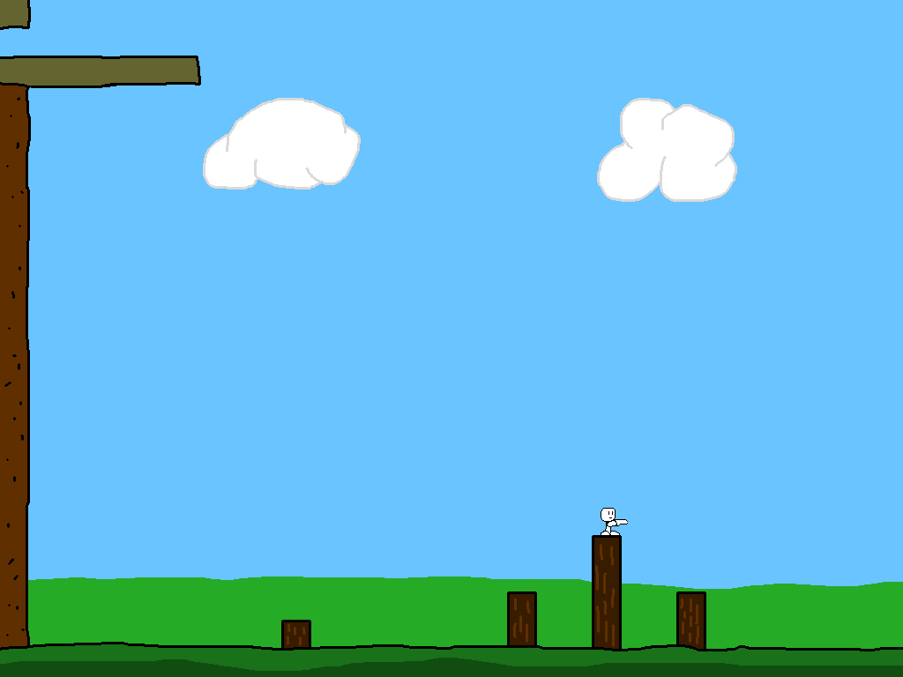

Never take a nap near a crumbling ledge. That's what the sentry learned as he woke up at the bottom of the cliff, a good story or two below his post. Now, take control as he traverses the tedious and trap-filled path back to the temple!
The Trip of the Sentry was a game I made on my own for a web development class in the Spring of 2018. It was developed entirely in JavaScript, using Canvas for display, and XMLHttpRequests for level loading.
